타이머
갈론드 벨



설정
| 조기 경보 알람 | |
| 생성 알람 | |
| 즐겨찾기 위치의 생성 경보를 설정합니다. | |
| 조기 경보 알람 소리 크기 | |
| 생성 알람 소리 크기 | |
| 알람 소리의 크기를 조절합니다. | |
| 조기 경보 알람 시간 설정 | |
| 생성 알람 시간 설정 | |
| 알람이 울릴 실제 시간(초)를 설정합니다. | |
| 옆으로 가능한 많은 칸을 사용합니다. | |
| 필요한 정보만 담긴 소형 타이머로 변경합니다. | |
필터
검색:
클래스
버전분류
기타
 골드소서
골드소서 마물사냥
마물사냥